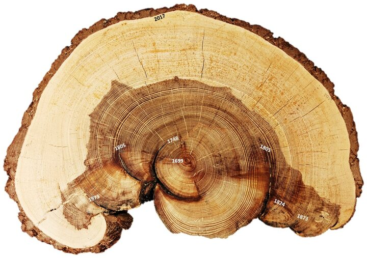

Dendrochronology:
- dendro: using trees, or more specifically the growth rings of trees
- chrono: time, or more specifically events in past time
- logy: the study of
Applications in dendrochronology include:
- ecology: insect outbreaks, forest stand structure, past fires (see image to the right):
- The white labels mark scars from distinct fires of the past
- Each of those fires has been dendrochronologically dated to the year it burned
- climatology: past droughts or cold periods
- geology: past earthquakes, volcanic eruptions
- anthropology: past construction, habitation, and abandonment of societies
| 
Photo: Ellis Margolis, U.S. Geological Survey (public domain) |